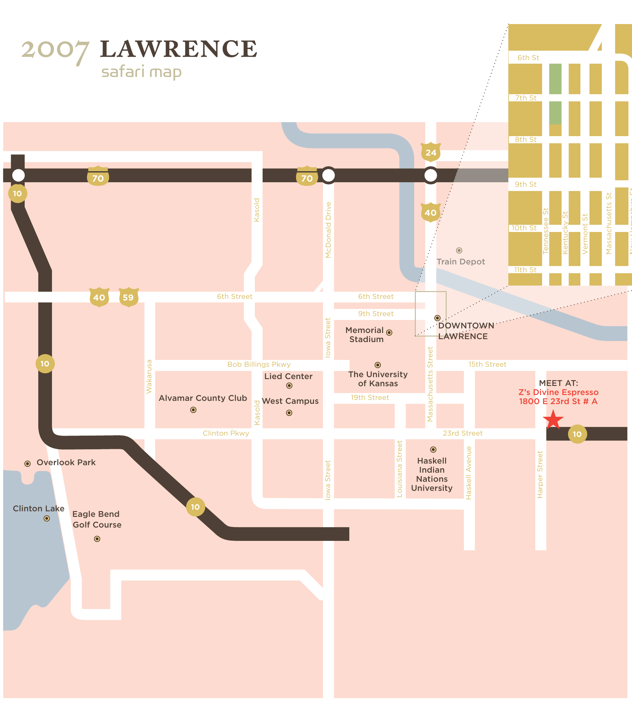

The 2007 edition
From Kansas City to Lawrence.
The 2007 Safari moved to Lawrence, Kansas. The event took place Saturday, June 9, from 9 a.m. to 1 p.m.
The day
Photographers worked within the mapped area for four hours, then selected ten entries apiece for the vote.
Twenty contestant galleries survive in the original site backup. The journal posts preserve the preparations, the day itself, and the final result.
View the original map ↗